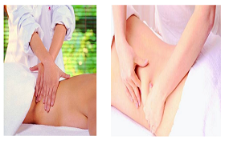

科室介绍
中医软伤科为我院重点特色专科，集临床、科研、教学为一体，继承并弘扬祖国的传统医学，经过中国著名中医软伤科名医的亲传和我科医生精心钻研，使中国软伤疗法得到了传承与创新。临床上采用微创治疗（刃针、针刀、银质针、拨针等）结合中医正骨、中药外敷、物理治疗等方法，对各种类型的骨折，关节脱位，扭伤，软组织挫伤，慢性劳损，骨质增生，颈椎病、肩周炎、网球肘、膝关节炎、腰椎间盘突出症、风湿疼痛等多种常见病、多发病，并对部分疑难杂症效果显著。具有消费低，痛苦少，疗效显著的特点，是深受广大患者欢迎的科室。科室现有医师4名，都是有资质有多年丰富的临床工作经验的医生，并带教出了许多优秀的学生。在中医传统医学和现代医学方法相结合的推动下，拥有许多优秀的雄厚的专业技术人才，使软伤科专业如虎添翼，是本地区和周边地区软伤科病人的福音。
